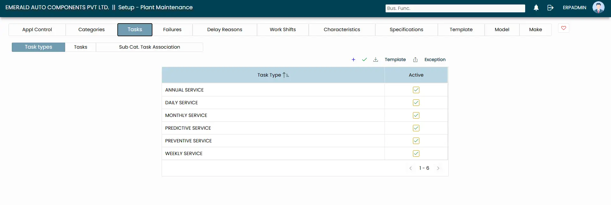

<div data-category="Plant Maintenance" data-title="Tasks Type" data-updated="January 27, 2026" data-contributors="RoadmapIT" data-breadcrumb="Home,Plant Maintenance,Tasks Type">
  <div class="page-content">
    <p>Task is a term that describes the classification of maintenance tasks based on their purpose, scope, or frequency. Task type can be based on the frequency, purpose, method, or trigger of the maintenance activity.</p>
    <p>Task type can be defined and assigned to different types of task lists that describe a sequence of individual maintenance activities.</p>
    <p>User can define the task type in this screen.</p>
    <h5>Navigation path:</h5>
    <p class="fs-6">Plant Maintenance \ Setup \ Setup-Plant Maintenance \ Tasks \ Task Type</p>
    
    <ul style="list-style-type: none; align-content: center">
      <li class="mouse-icon">
        By Clicking the
        <i class="bi bi-plus fs-4 mx-2 text-primary"></i>
        Add button we can create new Task Type
      </li>
      <li class="mouse-icon">Enter the Task Type</li>
      <li class="mouse-icon">
        Click on
        <i class="bi bi-check-lg fs-4 mx-1 text-success"></i>
        button to save
      </li>
    </ul>
  </div>
</div>